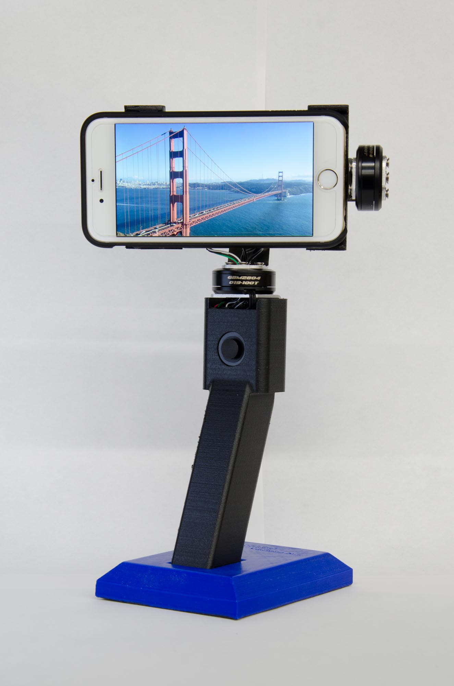
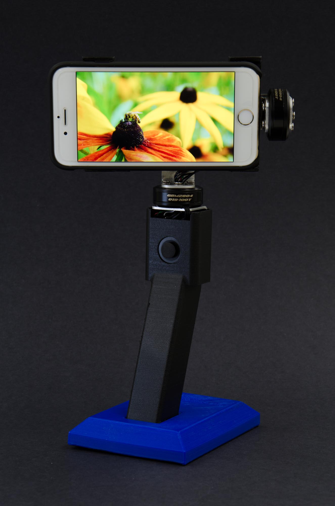

Different lighing of the same scene
On the left, only ambient light is used and as a result the handle seems rather flat and details are lost. In the middle, a directional flash is fired from the left side, which gives a nice reflection. However, the reflection seems too overpowering, which is reduce in the final shot. And in the final shot, the handle looks 3D and all the details are visible.


Different image on display also raise different feelings and emotion when viewing a image.